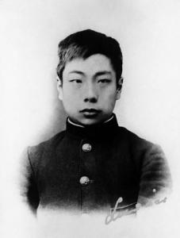

luxun

Lu Xun (formerly named Zhou Zhangshou, later renamed Zhou Shuren, September 25, 1881-October 19, 1936) was a native of Shaoxing, Zhejiang Province. He was a famous writer, thinker and democracy fighter. He was an important participant in the May 4th New Culture Movement and the founder of modern Chinese literature. His representative works include Shout and Hesitation.
Lu Xun has made great contributions to literary creation, literary criticism, ideological research, literary history research, translation and other fields in his life. He had a great influence on the development of Chinese society, ideology and culture after the may 4th movement. he became famous in the literary world and was praised as "the writer who occupied the largest territory on the cultural map of east Asia in the 20th century". Mao Zedong once commented: "Lu Xun's direction is the direction of the new culture of the Chinese nation."
characters experience
Juvenile period


he was born on September 25 in the 7th year of Guangxu reign (1881) (the third day of August in the third year of the summer calendar) in the Zhou family of xintaimen, dongchangfang, Shaoxing city, Zhejiang province. The young name is Zhang, Chang Gen, Chang Geng, scientific name Zhou Zhangshou.
In the 18th year of Guangxu's reign (1892), he went to three pools mirroring the moon to study in Shou Jingwu and drew pictures after class. Establish friendship with Zhang Runshui.
In the 19th year of Guangxu (1893), his grandfather Zhou Jiefu was jailed because of an accident. His father Zhou Boyi was seriously ill and his family had taken refuge in the countryside. Every time I come and go to quality shops and drugstores for my father, I get cold shoulder.
in the 22nd year of Guangxu (1896), his father died. Family circumstances are getting worse. I started writing diaries this year.
in the 23rd year of Guangxu's reign (1897), the family held a meeting and allocated rooms to Lu Xun, who was both poor and small. Lu Xun's refusal to sign was reprimanded by his uncle, and he felt extremely embarrassed by the world.
strive to studyIn the 24th year of Guangxu's reign (1898), he joined the Nanjing Naval Academy in April and changed his name to Zhou Shuren. In December, he was urged by his uncle to take the county examination. He stopped taking the government examination because his fourth brother was ill and went on to study in Nanjing.
in the 25th year of Guangxu's reign (1899), he transferred to Jiangnan Lu Shi school attached to the mining railway school to learn how to mine. During this period, he came into contact with Huxley's Theory of Evolution and Ethics, which had a certain influence on his later thoughts. In addition to reading new books, he loves horse riding and dares to compete with Manchu children.
Guangxu 28 years (1902) January, mine road school graduation. In March, I went to Japan to study abroad at public expense. In April, she entered the Jiangnan class in the general department of hong literature college (for the Japanese study speed-up class).
braid cutting in 1903, 29th year of Guangxu reign. After school, I like reading books on philosophy and literature, paying special attention to human nature and national character.
in 1904, the 30th year of Guangxu's reign (1904), Yu hong college of literature closed down in April. In June, my grandfather died at sixty-eight. In September, he went to Sendai Medical School (now Northeast University) to study and got to know Fujino Genkuro.
in the 32nd year of Guangxu's reign (1906), in January, the "Japan-Russia war education film" was observed during the break, which was greatly stimulated and decided to abandon medicine and become a writer. In June, the student status was included in the German-language school set up by the Tokyo Uniquely Language Association. In summer and autumn, he was tricked into returning home and marrying Zhu An. He immediately returned to Japan. In July, he returned to Tokyo from Sendai. He stopped attending school and specialized in literary translation. In the following years, he learned German and Russian in different ways.
in the 34th year of Guangxu reign (1908), he studied from Mr. Zhang taiyan, was a member of the "Guangfu association meeting" and worked with his second brother to translate "foreign novels". during this period, he lived a difficult life, and subsidized his life by proofreading manuscripts.
the first year of xuantong (1909), two volumes of foreign novels were published.
confusion and hardshipin August of the first year of xuantong (1909), he returned to China and served as physiology and chemistry teacher of Hangzhou and Zhejiang normal schools. he also served as botany translator for Japanese teacher suzuki GUI shou.
in the second year of Xuantong reign (1910), he served as a teacher and supervisor of Shaoxing middle school in August. In 1911, he wrote his first novel, Nostalgia, in classical Chinese.
in the first year of the Republic of China (1912), the interim government was established in Nanjing. at the invitation of Cai Yuanpei, chief of education, it was appointed chief of the first division of the social education department of the Ministry of education. He was appointed to the Ministry of Education in August. From this year to 1917, he copied a large number of ancient steles, compiled inscriptions on stone tablets, proofread ancient books, and also made some research on Buddhist thoughts.
In the sixth year of the Republic of China (1917), on July 7, he left office because of zhang xun restoration's disorderly conduct and anger. On the 14th, he returned to the Ministry immediately after the chaos.
in the 7th year of the Republic of China (1918), in January, he took part in the reorganization of "new youth" and served as editorial board.
literary pioneersin may of the seventh year of the Republic of China (1918), Lu Xun, under the pseudonym of Lu Xun, published the first vernacular short story "diary of a madman" written in modern style in the history of modern Chinese literature, which is contained in volume 4, volume 5, new youth.
in the ninth year of the Republic of China (1920), he taught the history of Chinese novels at Peking university and Beijing normal university. in June, he read the Chinese translation of the communist manifesto and praised the translator highly. In September, published the novel "storm".
in the 12th year of the Republic of China (1923), in August, the novel collection shouting was published. Separated from his younger brother Zhou Zuoren, he moved to No.61 Xisita Hutong for an unknown reason. In December, he gave a speech on "How After Nora Left" and also served as a teacher at the Women's Normal University and Esperanto School. The first volume of A Brief History of Chinese Novels was published.
in the 13th year of the Republic of China (1924), in July, I went to Xi' an to speak about the historical changes of Chinese novels. Return to Beijing in August. In November, "Yusi" Weekly was published, and Lu Xun published "On the Fall of Leifeng Pagoda" in the first phase. Since then, Lu Xun has become one of the chief writers of "Yusi".
democratic fightersIn the 14th year of the Republic of China (1925), the "women's normal university agitation" was further upgraded. Lu Xun was dismissed from his job by Zhang Shizhao, the education chief, for supporting the just struggle of progressive students. In the same year, Lu Xun sued Zhang Shizhao to the Pingzheng Institute.
in the 15th year of the Republic of China (1926), March, "August 31 massacre" occurred. In April, Lu Xun wrote "Death" and "Remembering the King of Liu Hezhen" criticizing the Duan Qirui government's crime of killing students. He was hunted down and took refuge in Yamamoto Hospital. During the period of refuge, I kept writing. In August, "Wandering" was published and went to Xiamen University as a professor in the Department of Chinese Literature. Resignation in December.
in the 16th year of the Republic of China (1927), he went to Zhongshan university to teach in January. In March, he met with Chen Yannian, Secretary of the CPC Guangdong and Guangxi Committee. On April 1, he went to Huangpu Military Academy to give a speech "Literature in Revolutionary Times". On the 12th, the "412 counter-revolutionary coup" took place. On the 29th, he resigned angrily without any result in rescuing progressive students. In August, he published "Wei Jin Style and Articles and the Relationship between Medicine and Wine". In September, he wrote to Taijingnong, refusing to be a candidate for the Nobel Prize for Literature. He left Guangzhou for Shanghai and began living together with Xu Guangping in Shanghai. In December, there was a dispute with Liang Shiqiu and others over the "third person" and "free person". The dispute lasted for a long time and had a great influence.
in the 17th year of the Republic of China (1928), in the spring, he joined the Chinese revolution freemasons. This year, a debate was held on the issue of "revolutionary literature" with most members of the Creation Society and the Sun Society. This year, a large number of Marxist works were collected and translated. At the same time, he began to advocate revolutionary fine arts and modern woodcut movement.
In the eighteenth year of the Republic of China (1929), on September 27, Xu Guangping gave birth to a son, whom Lu Xun named "Zhou Haiying". At the end of the year, he held many discussions with Feng Xuefeng to form the "Chinese Left-wing Writers' League."
left-wing leaderin the 19th year of the Republic of China (1930), in February, the China freedom movement alliance was established as one of the sponsors. On March 2, he attended the founding meeting of the left-wing writers' union of China and was elected as the standing Committee member to give a speech on "opinions on the left-wing writers' union".
In the 20th year of the Republic of China (1931), on January 20, Rou Shi was arrested and Lu Xun took refuge in his apartment. Back to my old apartment on the 28th.
in the 21st year of the Republic of China (1932), on January 29, in case of war, in the line of fire. The next day I took refuge in Neishan Bookstore. February 6, escorted by Neishan Bookstore Friends to Neishan Branch of British Concession for temporary shelter. With AI Qing and others launched the "Spring Land Art Institute".
in the 22nd year of the Republic of China (1933), Cai Yuanpei was invited to join the "civil rights protection alliance" in January and was elected as an executive member. On February 17, Cai Yuanpei sent an invitation to Soong Ching Ling House to welcome Bernard Shaw. In Memory of Rou Shi as "Remembrance for Forgetting".
In the 23rd year of the Republic of China (1934), in January, the "Beiping Notes" co-edited with Zheng Zhenduo was published. In May, the preface of the woodcut "Yin Yu Ji" was published.
In the 24th year of the Republic of China (1935), translation of Gogol's Dead Souls began in February. In June, the book "New Literature Series-Two Novels" was integrated and long preface was made.
in the 25th year of the Republic of China (1936), in January, severe pain occurred in both shoulders and ribs, and the last innovative work, "new stories" was published. In February, the translation of the second part of Dead Souls began. On may 15, the disease recurred, and the doctor diagnosed the stomach disease. the fever has not healed since then. on may 31, ms smalley led doctor Deng of the United States to diagnose the disease. the situation is not optimistic. In June, his health improved slightly. Lu Xun and the people around him thought "Lu Xun is well." The disease recurred on October 17 and started before dawn on October 18, causing asthma. He passed away at 5: 25 a.m. on the 19th.